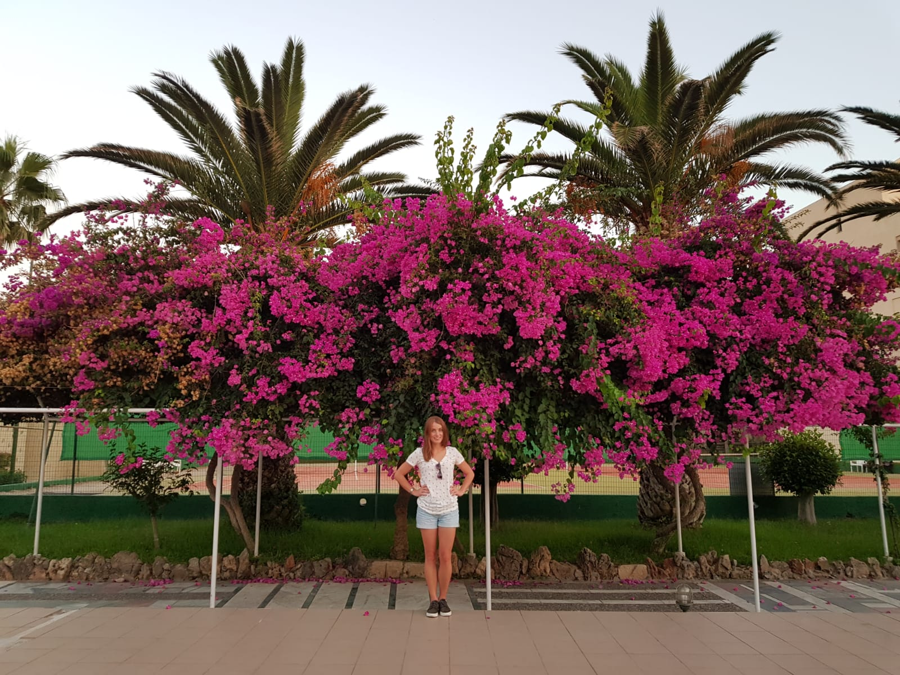

Podczas studiów na kierunku Inżynierii Środowiska udało mi się zdobyć i zgłębić wiedzę na temat profesjonalnej ochrony środowiska i racjonalnego gospodarowania zasobami naturalnymi. Posiadam również wiedzę z zakresu instalacji wodociągowych i kanalizacyjnych, a także technologii unieszkodliwiania odpadów. Nie są mi również obce zagadnienia dotyczące niekonwencjonalnych źródeł energii oraz budynków pasywnych.
Zdobytą wiedzę chciałabym przełożyć na swoją ścieżką zawodową. Poszukuję pracy, która jest w stanie zapewnić mi rozwój i możliwość uzyskania uprawnień zawodowych. Jak powszechnie wiadomo, doświadczenie najlepiej zdobywa się wprost od specjalistów danej dziedziny nauki, dlatego jestem gotowa samodzielnie podejmować wyzwania pod okiem doświadczonych fachowców.

Posiadam bardzo szerokie zainteresowania wykraczające poza schemat opisany powyżej. Jestem osobą, która z łatwością wciela w życie oraz realizuje założone cele. Nie można mi również odmówić wytrwałości, bo raz obrany przeze mnie cel skrupulatnie wykonuję. Ponadto jestem osobą niezwykle rzetelną, powierzone obowiązki zawodowe zawsze wykonuję z należytą starannością. Jak mało kto potrafię szybko przystosowywać się do innowacji ani nie boję się iść naprzód z duchem czasu. Z wiekiem posiadłam umiejętność obserwowania ludzi i zachodzących procesów i wyciągania z tych obserwacji istotnych wniosków. Dodatkowo mam duże zdolności organizatorskie, co pozwala mi się odnaleźć zarówno w roli lidera, jak i wśród współpracowników.